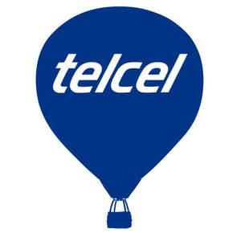

Trade Mark Journal No.2025/016 18 April 2025
UK00004184295 4 April 2025 (9,35,38)

- Class 9
- Scientific, nautical, geodesic, photographic, cinematographic, optical, weighing, measuring, signalling, control (inspection), rescue and teaching apparatus and instruments; apparatus and instruments for conduction, distribution, transformation, accumulation, regulation or control of electricity; devices for recording, transmitting or reproducing sound or images; magnetic record media, acoustic discs; compact discs, DVDs and other digital recording media; mechanisms for prepaid devices; cash registers, calculating machines, data processing equipment, computers; software; electrical lines connections; couplers [computing]; electrical couplings; wire of metal alloys [fuses]; mouse pads; speakers; ammeters; amplifiers; sound amplifier apparatus; downloadable image files; downloadable music files; headphones; telephone headsets; electrical batteries; solar batteries; chargers for electrical batteries; optical fibre wires; electric cables; covers for electrical cables; union sleeves for electrical cables; video-cameras; photo cameras; battery and battery chargers; chips [integrated circuits]; magnetic tape recorders; magnetic tape units [computing]; video tapes; magnetic tapes; tapes for sound recordings; printed circuits; integrated circuits; printed circuit cards; coded magnetic cards; magnetic encoders; barcode readers; electrical collectors; compact discs [audio and video]; compact optical discs; computer printers; computers; laptops; connection boxes; connection boards; electrical switching apparatus; switches; switches; distribution consoles [electricity]; electrical contacts; answering machine; telephone answering machine; data processing devices; magnetic data carriers optical data carriers; compact discs [audio and video]; compact discs [read-only memories]; phonographic records; magnetic discs; optical discs; compact optical discs; [telecommunication] transmitters; electronic signal emitters; scanners [computer peripherals]; phones; cellphones; tablet computers; smart phones; photocopiers; fax equipment; computer peripherals; intercommunication devices; interfaces [computing]; hands-free kits for phones; computer game programs; readers [hardware]; downloadable ringtones for mobile phones; usb flash memory drives; computer memories; microphones; monitors [hardware]; monitors [computer programs]; cords for mobile phones; processors [central processing units]; computer game programs; recorded computer operating systems programs; computer programs [downloadable software]; recorded computer programs; downloadable electronic publications; receivers [audio and video]; mice [hardware]; radiotelegraphic equipment; portable radiotelephones [walkie-talkies]; radiotelephone equipment; software [recorded programs]; software [recorded programs]; connection boards; control boards [electricity]; distribution boards [electricity]; wireless telephone poles; telephone devices; telephone wires; telephone transmitters; televisions; videophones; video cameras; cabinets with electrical supply for network servers and computer communications systems; computer memory devices; computer games [software]; downloadable electronic manuals [downloadable electronic publication]; digital photo frames; programs for video games; sim cards; transponder; [telecommunications device].
- Class 35
- Advertising; commercial business management; commercial administration; office work; marketing; advertising through a computer network; sales promotion for third parties; dissemination of advertising announcements; promotional strategy services for obtaining rewards originated from a purchase; evaluation of the impact of new products on consumers; compilation of information in computer databases; issuance of digital tax receipts [electronic billing]; presentation of products in any media for retail sale; distribution of advertising material [brochures, leaflets, prints, samples]; analysis of the impact of new products on a panel of consumers; monitoring of advertising advertisements provided by specialists; statistical data compilation services; distribution of samples for advertising purposes; conducting qualitative and quantitative sensory studies on the impact of products on consumers; opinion polling services through electronic voting; verification of merchandise orders; update of advertising documentation; placement agencies; import-export agencies; accounting; commercial information agencies; advertising agencies; rental of automatic distributors; rental of advertising spaces; rental of office machines and appliances; rental of advertising material; rental of advertising time in the media; cost price analysis; dissemination of advertising announcements; computer file management; commercial representation of entertainment artists; commercial information and advice to the consumer; advice on business management; assistance in business management; compilation of information in computer databases; systematization of data in computer databases; search for information in computer files for third parties; market search; search for sponsors; business searches; placing of posters [advertisements]; commercial information agencies; commercial investigation; assistance in the management of industrial or commercial companies; commercial expertise; price comparison services; compilation of information in computer databases; page composition services for advertising purposes; presentation of products in any media for retail sale; transcription of communications; press release services; business management consulting; consulting in the field of human resources; consulting in business organization; consulting in business organization and management; professional business consulting; commercial information and advice to the consumer; answering machine services absent subscriber services; advertising mail; preparation of tax returns; window dressing; product demonstration; organization of fashion shows for promotional purposes; dissemination of advertising announcements; advice on business management, assistance in the management of commercial or industrial companies; assistance in business management; business management consulting; distribution of samples; performance experts; organization of exhibitions for commercial or advertising purposes; organization of fairs for commercial or advertising purposes; commercial management of licenses of products and services for third parties; professional management of artistic business; marketing; modelling services for advertising or sales promotion; assembly of advertising films; distribution of samples; professional management of artistic business; organization of fashion shows for promotional purposes; production of advertising films; publication of advertising texts; advertising through a computer network; street advertising; external advertising; direct mail advertising; advertising by correspondence; radio advertising; television advertising; collection of statistics; writing of advertising texts; public relations; commercial representation of entertainment artists; commercial representation services for athletes; reproduction of documents; subscription to telecommunications services for third parties; telemarketing services; analysis of the impact of new products on a panel of consumers; sensory analysis of new products in a panel of consumers; sensory analysis of the impact of new products on consumers; monitoring of advertising advertisements provided by specialists; arrangement of shelves for commercial purposes; advice and commercial information regarding the acquisition or purchase of products and services for other companies; assistance in commercial administration through the supervision of promotional sales points; customer services to make complaints and suggestions regarding products and services not for legal purposes; casting services for advertising purposes; compilation of press articles; services for return of goods derived from a purchase; telephone marketing services; monitoring of advertising provided by specialists through radio stations; production of commercial advertising; production of television commercials; production of advertising commercials; advertising production; commercial representation of products on behalf of third parties; opinion polling services through electronic voting; business advice regarding mergers and acquisitions of commercial companies; mathematical data compilation services; statistical data compilation services; personnel recruitment services; business directory services to assist in the location of people, places, organizations, phone numbers and pages on internet sites; promotional strategy services for obtaining rewards originated from a purchase; marketing of cellular phones and telecommunications devices; evaluation of the influence of advertising on audiences; provision of user reviews for commercial or advertising purposes; providing user ratings for commercial or advertising purposes; analysis of business behaviours; analysis and preparation of statistical reports.
- Class 38
- Telecommunications; rental of access time to worldwide computer networks; user access services to global computer networks; phone rental; rental of fax devices; rental of telecommunication devices; rental of devices for sending messages; modem rental; phone rental; voicemail services; cellular radiotelephony; communications through computer terminals; computer-assisted transmission of messages and images; communications by fibre optical networks; radio communications; telephone communications; telegraphic communications; internet connection services; email; broadcast of radio or television programs; broadcast of television programs; broadcast of radio programs; wireless broadcasting services; television broadcasts; radio emissions; routing and link services for telecommunications; provision of telecommunication channels for tele-sales services; radio page services [radio, telephone or other means of electronic communication]; broadcasting; satellite transmission; cable broadcast; intelligent addressing services [link to communication links]; network interconnection services; bridging services for connection [telecommunication]; routing and linking of telecommunications services; rental of telecommunication devices; communications through computer terminals; computer-assisted transmission of messages and images; communications by fibre optical networks; communications through computer terminals; communications through computer terminals; radio communications; online software transmission services; access to cell phone images; access to cell phone ring tone; public telephone box services; data, sound and image download services; voice over internet protocol services; provision of airtime through phone cards; provision of airtime for communications; airtime recharging services for cellular phones; chat room services for text messages; transmission of tones and images for cellular phones; value added services in telephony, transmission of computer files. .
SERCOTEL S.A de C.V.
Representative: Marks & Clerk LLP